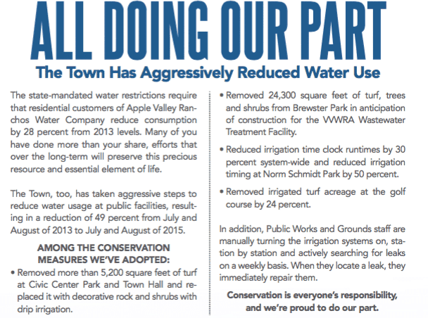

By Kerry Henard
Despite its claims, the Town performs as little maintenance and oversight as it possibly can. Given that the Town cannot manage simple drip systems, toilets, drinking fountains, and basic electrical issues, how is the Town going to manage our water utility?
(Check out the Town’s waterfall at 11:30.)

From the Town’s February 2016 Special Edition
newsletter.